# scheduling ## **Design of Autonomous Systems** ### csci 6907/4907-Section 86 ### Prof. **Sibin Mohan** --- <!-- .slide: data-background="white" --> consider an engine control system 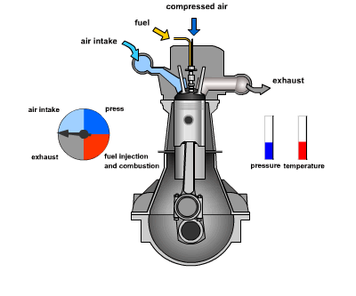 --- <!-- .slide: data-background="white" --> **periodically** cycles through multiple tasks, ||| |----|-----| | | <ol> <li>air intake</li> <li>pressure</li><li>fuel injection+combustion</li><li>exhaust</li></ol>| || --- <!-- .slide: data-background="white" --> when correlated to "task activations", ||| |-----|-----| ||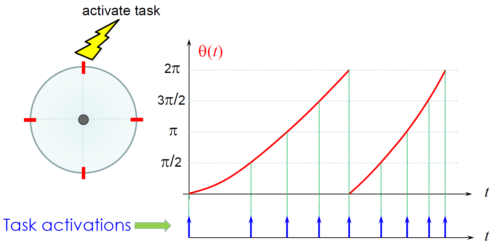| || --- <!-- .slide: data-background="white" --> when correlated to "task activations", ||| |-----|-----| ||| || **direct** correlation between → physical aspects and scheduling --- <!-- .slide: data-background="white" --> when correlated to "task activations", ||| |-----|-----| ||| || "**cyclic executives**" --- ## Real-Time Models --- ## Real-Time Models how do we model/make sense of/classify RTS? --- ## hard vs soft rts --- ## hard vs soft rts |property||| |----|----|--------| |"_usefulness_" of results| || --- ## hard vs soft rts |property|hard|soft| |----|----|--------| |"_usefulness_" of results| 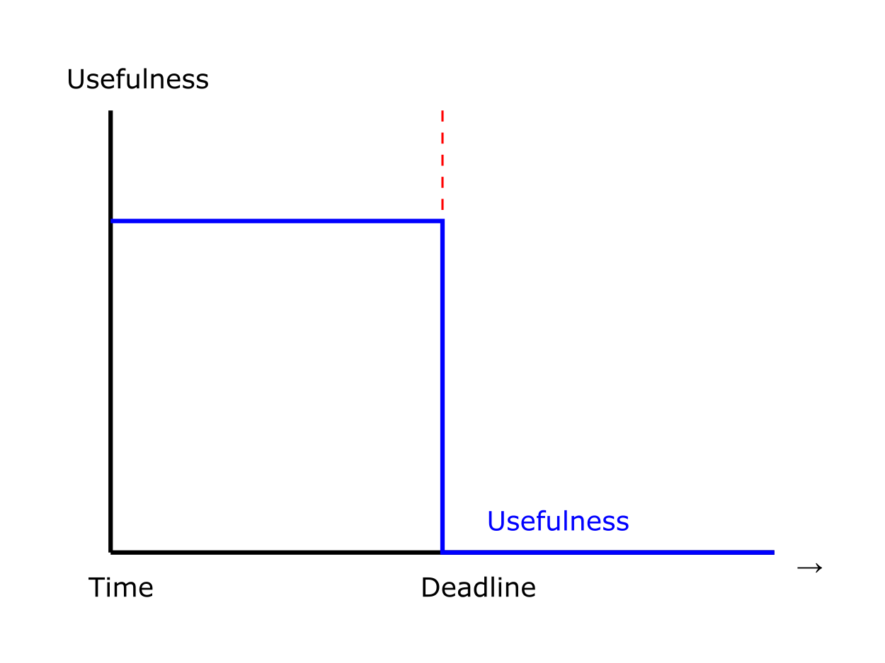|| --- ## hard vs soft rts |property|hard|soft| |----|----|--------| |"_usefulness_" of results| | 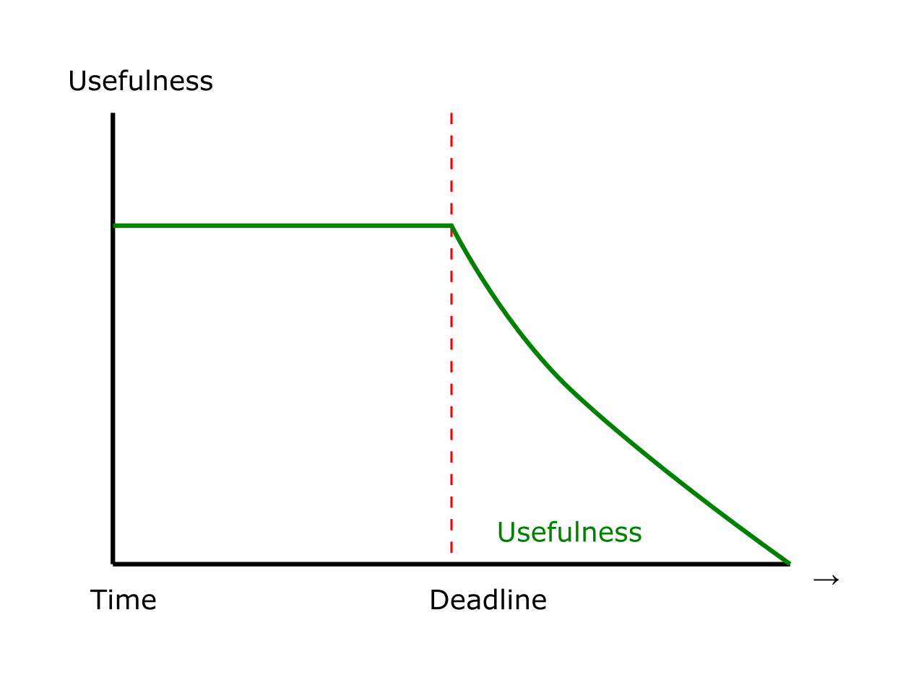| --- ## hard vs soft rts |property|hard|soft| |----|----|--------| |"_usefulness_" of results| | | |optimality| **all** deadlines → satisfied | | --- ## hard vs soft rts |property|hard|soft| |----|----|--------| |"_usefulness_" of results| | | |optimality| **all** deadlines → satisfied | **most** deadlines met | --- ## hard vs soft rts |property|hard|soft| |----|----|--------| |"_usefulness_" of results| | | |optimality| **all** deadlines → satisfied | **most** deadlines met | | examples| sensor readings, vehicular control, space vehicles, ABS | video decoding, displaying messages| || --- many ways to **model** a real-time system --- many ways to **model** a real-time system |model|parameters| |-----|----------| |[**workload** model](#workload-model) | functional, temporal parameters, <br> precedence constraints/dependencies| --- many ways to **model** a real-time system |model|parameters| |-----|----------| |[**workload** model](#workload-model) | functional, temporal parameters, <br> precedence constraints/dependencies| |[**resource** model](#resource-model) | modeling resources, resource parameters | --- many ways to **model** a real-time system |model|parameters| |-----|----------| |[**workload** model](#workload-model) | functional, temporal parameters, <br> precedence constraints/dependencies| |[**resource** model](#resource-model) | modeling resources, resource parameters | |[**algorithms**](#scheduling-and-algorithms) | scheduling policies, other resource management | || --- ### Workload Model already discussed → [tasks vs. jobs vs. thread](https://autonomy-course.github.io/6.rtos.html#/36) --- ### here we focus on → **jobs** and properties --- ### here we focus on → **jobs** and properties --- ### here we focus on → **jobs** and properties --- ### here we focus on → **jobs** and properties --- ### here we focus on → **jobs** and properties 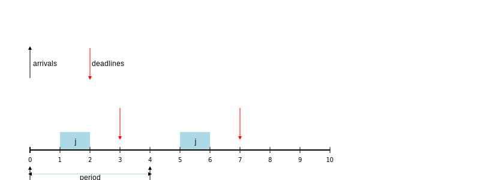 --- ### here we focus on → **jobs** and properties **note** → deadlines and periods don't have to match --- ### here we focus on → **jobs** and properties **note** → deadlines and periods don't have to match but they **usually** do, _i.e., $D = P$ --- ### **job** | concerns | property | description | |----------|--------------| | **temporal** | timing constraints and behavior | | **functional** | intrinsic properties of the job | | **resource** | resource requirements| | **interconnection** | dependencies with other jobs | || --- ### **job** | concerns | property | description | |----------|--------------| | **temporal** | timing constraints and behavior | | **functional** | intrinsic properties of the job | | **resource** | resource requirements| | **interconnection** | dependencies with other jobs | || much depends on → [wcet](https://autonomy-course.github.io/textbook/autonomy-textbook.html#the-wcet-problem) problem --- ### Utilization --- ### Utilization computed to understand → **workload requirements** for a **task** --- ### Utilization > how much **utilization** is taken up by <br> > **all** jobs of the task? --- ### Utilization > how much **utilization** is taken up by <br> > **all** jobs of the task? hang on... --- in a **periodic** system → potentially **infinite** number of jobs! --- in a **periodic**++ system → potentially **infinite** number of jobs! <br> ++ anyone remembers what a "periodic function" is"? --- **periodic** function $f(t) = f(t+T)$ --- **periodic** function $f(t) = f(t+T)$ <br> where, $T$ → period --- in a **periodic** system → potentially **infinite** number of jobs! how can we compute → utilization? --- utilization is **not** time taken by a task/jobs --- utilization is **not** time taken by a task/jobs **fraction** of processor's total available utilization --- **fraction** of processor's total available utilization soaked up by that Task and its jobs --- utilization for a **single** task is, $$U_i = \frac{c_i}{T_i}$$ --- utilization for a **single** task is, $$U_i = \frac{c_i}{T_i}$$ | symbol | description | |--------|-------------| | $c_i$ | wcet of the task | | $T_i$ | period of the task | --- utilization for the **entire task set**, --- utilization for the **entire task set**, $$U = \sum_{i=1}^{n} U_i$$ --- utilization for the **entire task set**, $$U = \sum_{i=1}^{n} U_i = \sum_{i=1}^{n} \frac{c_i}{T_i}$$ --- simple exercise → compute utilization for, | Task | c | T | |------|---|---| | τ1 | 1 | 4 | | τ2 | 2 | 5 | | τ3 | 5 | 17 | || --- simple exercise → compute utilization for, | Task | c | T | |------|---|---| | τ1 | 1 | 4 | | τ2 | 2 | 5 | | τ3 | 5 | 17 | || what does it mean if $U > 1$? --- ### Precedence Constraints one of the following: - precedence constraints - independent --- ### Precedence Constraints directed acyclic graphs (**DAGs**) → specify/capture constraints --- ### Precedence Constraints $ J_a \prec J_b$ implies, --- ### Precedence Constraints $ J_a \prec J_b$ implies, - $J_a$ is a **predecessor** of $J_b$ - $J_b$ is a **successor** of $J_a$ --- ### Precedence Constraints $ J_a \to J_b$ implies - $J_a$ is an **immediate** predecessor of $J_b$ --- example: |dag| relationships| |-----|-----| |<img src="img/scheduling/jobs/job_precedence.png" width="550"> | $J_1 \prec J_2$ <br> $ J_1 \to J_2$ <br> $J_1 \prec J_4$ <br> $J_1 \not\to J_4$| || --- <!-- .slide: data-background="white" --> precedence constraints → **autonomous driving system** 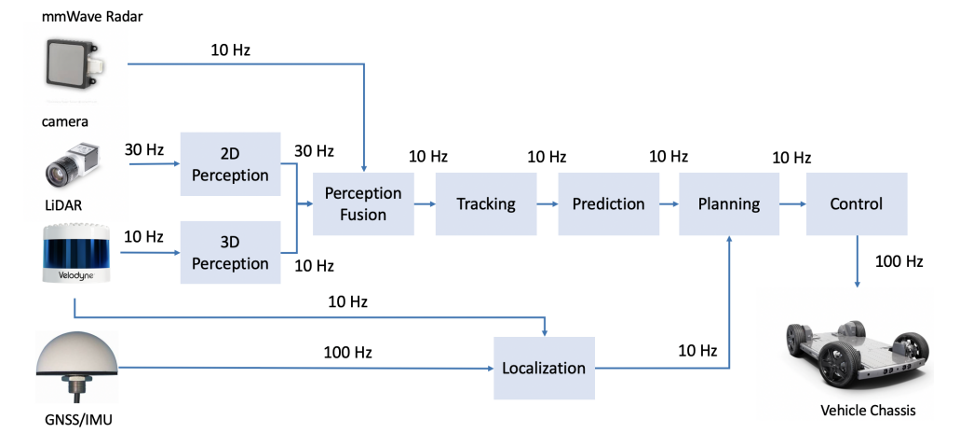 --- ## Resource Model --- ## Resource Model "resource" → structure used by task to advance execution --- ## Resource Model "resource" → structure used by task to advance execution already discussed → [resource sharing/sync](https://autonomy-course.github.io/textbook/autonomy-textbook.html#inter-task-communication-and-synchronization) --- ## Scheduling and Algorithms --- but first... --- what is a "**preemption**"? --- ### preemption - **suspending** a running task --- ### preemption - **suspending** a running task - in favor of **higher priority** task --- ### preemption --- ### preemption most OS (real-time & non real-time) → allow preemption --- most OS (real-time & non real-time) → allow preemption - greater flexibility in constructing schedules --- most OS (real-time & non real-time) → allow preemption - greater flexibility in constructing schedules - exception handling --- most OS (real-time & non real-time) → allow preemption - greater flexibility in constructing schedules - exception handling - interrupt servicing --- ### Task Schedule --- ### Task Schedule | **formal** definition --- ### Task Schedule | **formal** definition given → a set of jobs, $J = \{ J_1, J_2,...,J_n \}$ --- ### Task Schedule | **formal** definition given → a set of jobs, $J = \{ J_1, J_2,...,J_n \}$ ||| |-----|-----| |**schedule** → | **assignment** of Jobs to the CPU | --- ### Task Schedule | **formal** definition given → a set of jobs, $J = \{ J_1, J_2,...,J_n \}$ ||| |-----|-----| |**schedule** → | **assignment** of Jobs to the CPU <br> each task executes till **completion** | || --- ## Schedulers --- ## Schedulers finally! --- ## **real-time** Schedulers --- ## **real-time** Schedulers | **formal** definition --- ## **real-time** Schedulers | **formal** definition we need to specify, 1. a set of **tasks** --- ## **real-time** Schedulers | **formal** definition we need to specify, 1. a set of **tasks**, $\tau$ 2. a set of **processors**, $P$ --- ## **real-time** Schedulers | **formal** definition we need to specify, 1. a set of **tasks**, $\tau$ 2. a set of **processors**, $P$ 3. a set of **resources**, $R$ --- ### **general scheduling problem** --- ### **general scheduling problem** - assign $P$, $R$ → $\tau$ --- ### **general scheduling problem** - assign $P$, $R$ → $\tau$ - **constraints are met** - timing, precedence, resource --- [large body of literature](https://link.springer.com/book/10.1007/978-1-4614-0676-1) → real-time scheduling algorithms --- ### **types** of RT scheduling algorithms - completely **static** → _e,g.,_ [cyclic executives](#cyclic-executives) - **priority**-based → static (_e.g.,_ RM) and dynamic (_e.g.,_ EDF) - dynamic **best effort** --- ### challenges in real-time scheduling - problem is often **intractable** - NP-Hard or even NP-Complete! often resort to **heuristics** → sub-optimal --- luckily → a couple of **provably optimal** real-time schedulers --- luckily → a couple of **provably optimal** real-time schedulers (in the single core domain) --- consider this simple example: |task|c| |----|--| | $T_1$ | 1| | $T_2$ | 2| | $T_3$ | 3| || --- consider this simple example: |task|c| |----|--| | $T_1$ | 1| | $T_2$ | 2| | $T_3$ | 3| || how would we schedule this in the **simplest** way? --- 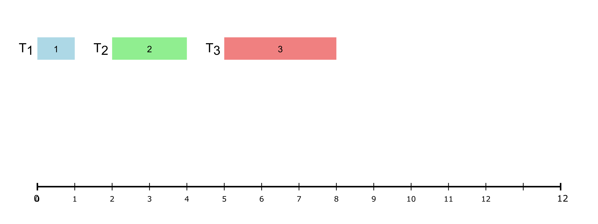 --- ### **sequential** schedule? 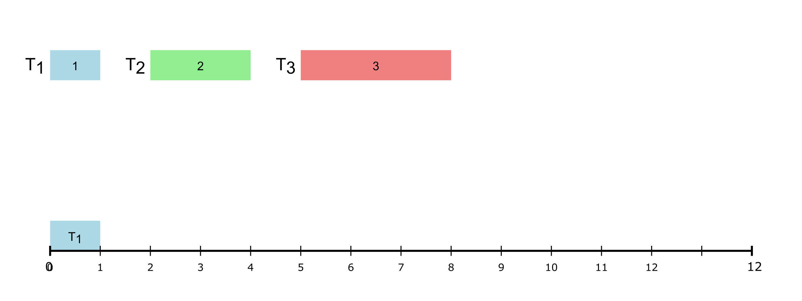 --- ### **sequential** schedule? 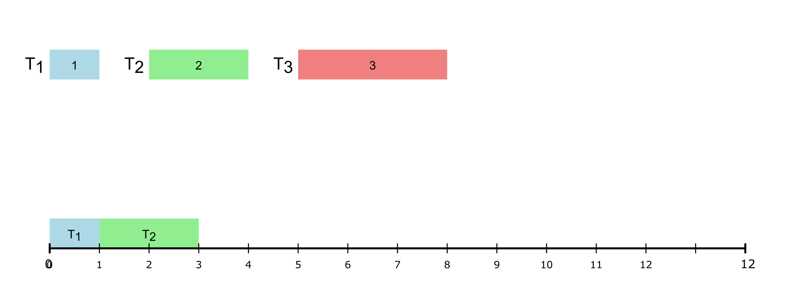 --- ### **sequential** schedule? 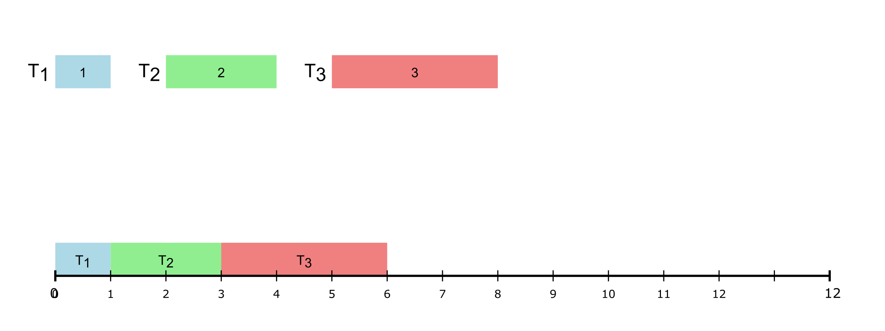 --- ### **sequential** schedule? 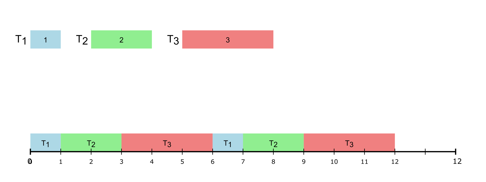 --- ## Cyclic Executives --- ## Cyclic Executives - very common in **critical** RTS - **simple** and **deterministic** --- ## Cyclic Executives a _potential_ implementation, ```C [1|3|4|6|8|9] while(1) // an infinite loop { // Some Initialization Task_T1() ; // Some processing, maybe Task_T2() ; // Some other processing, maybe Task_T3() ; // Cleanup } ``` --- potential problems? --- ### problems simplicity → biggest weakness --- ### problems simplicity → biggest weakness 1. flexibility --- ### problems simplicity → biggest weakness 1. flexibility 2. scalability --- ### problems simplicity → biggest weakness 1. flexibility 2. scalability 3. priority --- ### problems simplicity → biggest weakness 1. flexibility 2. scalability 3. priority 4. resource management --- tasks can hog resources! --- tasks can hog resources! <img src="img/scheduling/cyclic/cyclic6.svg" width="1500"> what if $T_1$ or $T_2$ more critical? --- tasks can hog resources! <img src="img/scheduling/cyclic/cyclic6.svg" width="1500"> what if $T_1$ or $T_2$ more critical? → wait for $T_3$!!! --- so, how would you **mitigate** these issues? --- ### frames --- ### frames - split the resource allocation → "frames" --- ### frames - split the resource allocation → "frames" - **fixed** chunks of time → **exclusive** access to resource --- for previous example, let <sc>frame size =</sc> <scb>2</scb> units each --- <sc>frame size =</sc> <scb>2</scb> 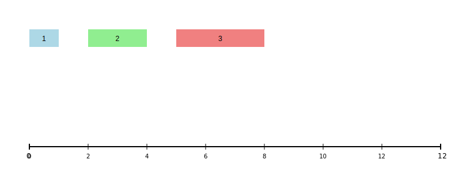 --- <sc>frame size =</sc> <scb>2</scb> 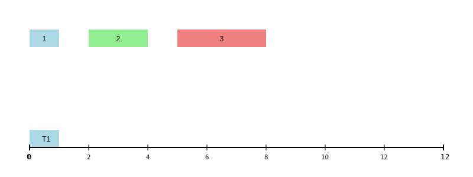 --- <sc>frame size =</sc> <scb>2</scb> $T_1$ **wastes** some utilization → doesn't use up entire frame --- <sc>frame size =</sc> <scb>2</scb> 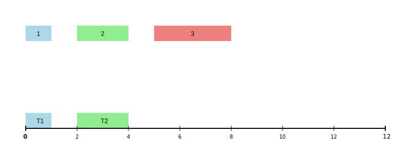 --- <sc>frame size =</sc> <scb>2</scb> 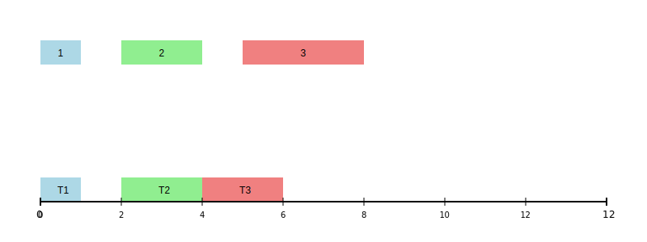 --- <sc>frame size =</sc> <scb>2</scb> $T_3$ **cannot complete execution** → frame ends! --- <sc>frame size =</sc> <scb>2</scb> 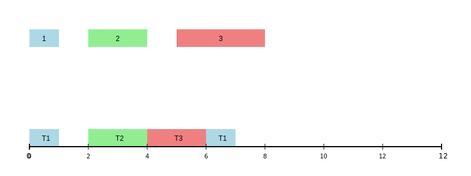 --- <sc>frame size =</sc> <scb>2</scb> 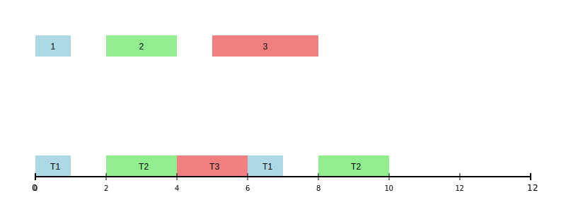 --- <sc>frame size =</sc> <scb>2</scb> 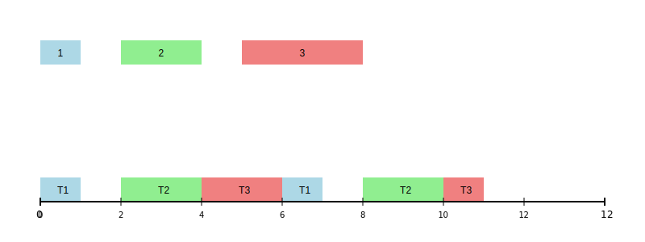 --- <sc>frame size =</sc> <scb>2</scb> **now** $T_3$ completes